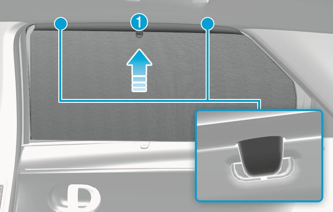

뒷좌석 도어 커튼

2C_RearSeatSideCurtain
뒷좌석 유리창을 통해 들어오는 빛을 차단할 때 사용하십시오.
-
커튼 고리(1)를 잡고 올리십시오.
-
장착된 양쪽 후크에 커튼을 거십시오.
커튼이 한쪽 후크에만 걸릴 경우 주름 및 이음이 생길 수 있습니다.
-
커튼 후크에 커튼 이외의 물건을 걸지 마십시오.
-
커튼을 내릴 때 그 상태에서 아래 방향으로 손잡이를 놓아 천천히 제자리로 돌려 놓으십시오. 무리하게 힘을 가할 경우 커튼이 구겨지거나 변형될 수 있습니다.
-
커튼이 들어가는 도어 내부에 이물질(동전, 장난감, 과자 등)이 있을 경우 커튼이 제대로 작동 되지 않을 수 있습니다. 도어 내 이물질이 들어가지 않도록 주의하십시오.